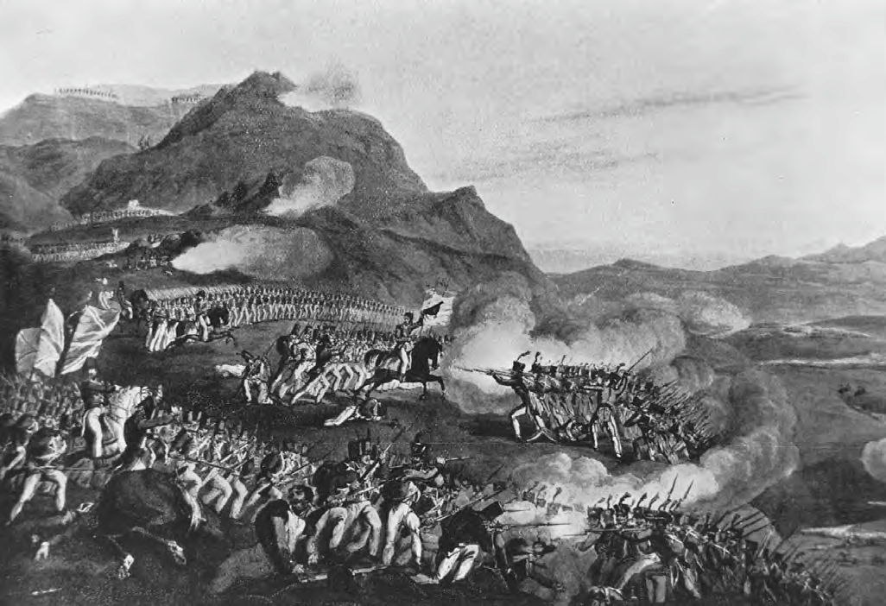
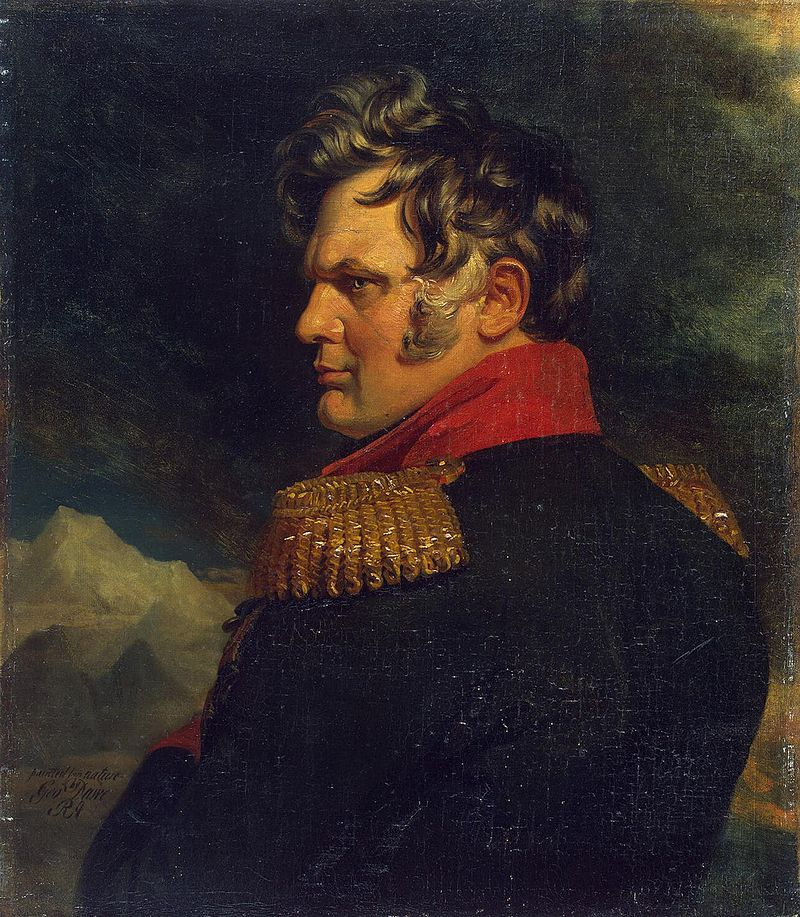
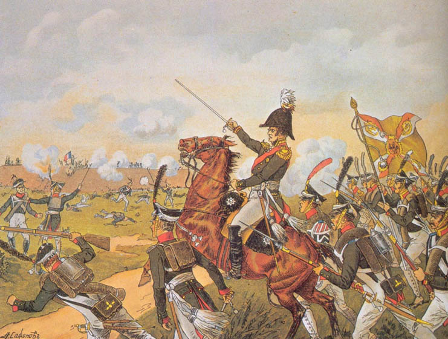
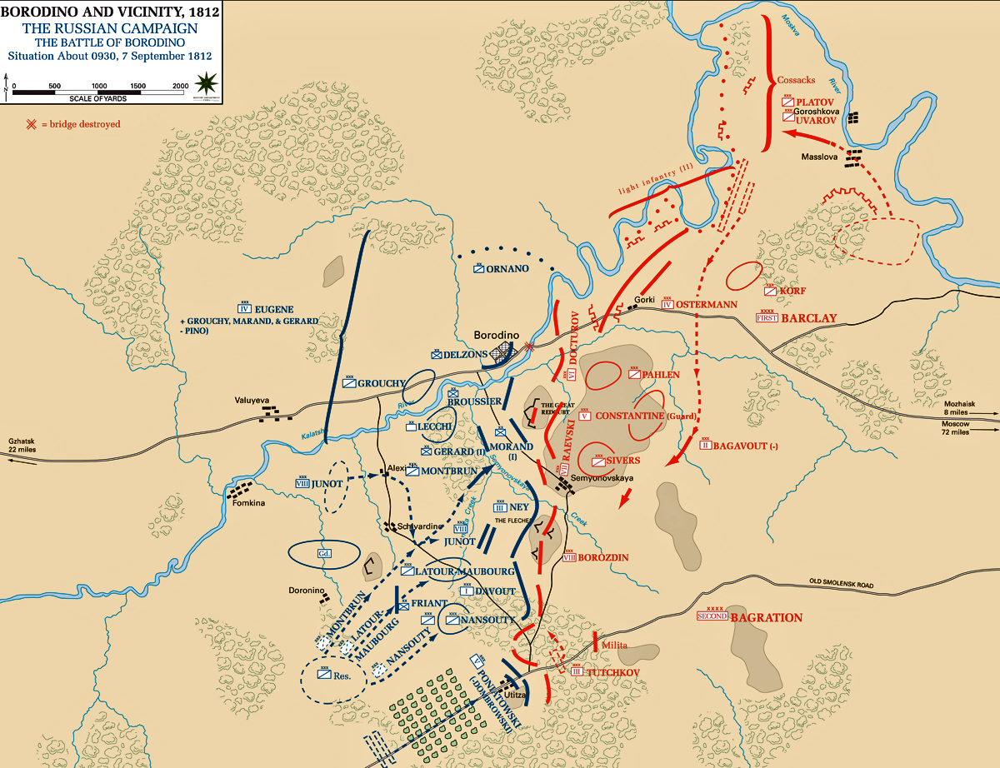
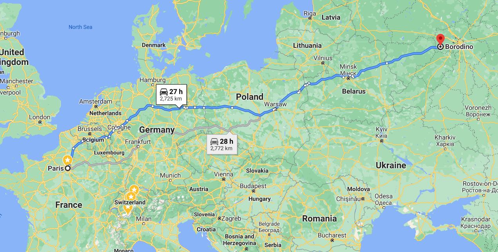
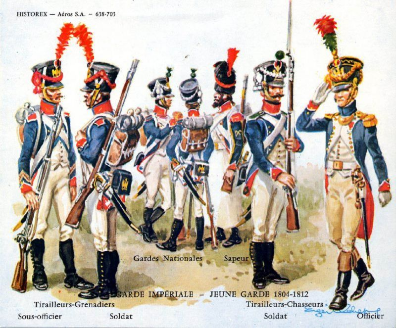

보로디노 전투 (8) - 양파
게시: 2020-09-14T06:30:09+09:00
쿠투조프의 지휘는 확실히 일관성도 없고 너무 무성의했습니다. 그러나 쿠투조프의 기본 전략이 괜찮았던 점도 분명히 있었습니다. 먼저, 분명히 쿠투조프는 러시아군은 프랑스군과 기동전을 벌일 실력이 안된다고 정확하게 평가하고 무조건 좁은 지형에서의 방어전으로 전략을 확실히 정했습니다. 그런 점에서는 영국의 웰링턴과 확실히 비슷했지요. 그러나 웰링턴과는 다른 점도 분명히 있었습니다. 웰링턴은 영국군을 향상 2~3줄의 얇은 횡대로 펼쳐서 최대한의 화력을 전진하는 프랑스군에게 퍼붓는 전술을 썼습니다. 필요시에는 반원 모양으로 대오를 수축시켜 종대로 공격해오는 프랑스군의 선두 부분을 집중 사격하는 세심함도 보여주었습니다. 이는 사회 밑바닥 층을 모병제로 끌어모아 만든 영국군 특성상 이해력은 떨어져도 장기간에 걸쳐 실탄 사격 훈련을 시켰기 때문에 가능한 것이었습니다. 물론 영국군은 병력이 그리 많지 않다는 점도 한몫 했지요.

(1810년 포르투갈 부사쿠(Bussaco)에서 마세나가 지휘하는 프랑스군의 공격을 격파하는 월링턴의 얇고 붉은 선(thin red line)입니다.) 쿠투조프는 러시아군이 기동전에 약하다고 해서 꼭 방어전에서는 철벽이라는 뜻은 아니라는 것도 명확히 알고 있었습니다. 그래서 당연히 프랑스군의 쇠망치 같은 공격에 자신의 방어진이 뚫릴 것이라고 생각하고는 그에 대비하여 병력을 이중삼중으로 겹겹이 배치해 놓았습니다. 이건 보로디노의 방어진영에 비해 병력이 많았기 때문이기도 했습니다. 아무튼 그 때문에, 프랑스군은 러시아군의 방어를 돌파하고 기뻐하며 좀더 전진하려 하면 곧 두번째 세번째 저항선에 부딪혀야 했습니다. 이는 아침 일찍부터 벌어진 러시아군 좌익 바그라티온의 철각보에서 러시아군의 반격과 프랑스군의 재반격이 계속 되풀이되는 결과를 낳았습니다. 러시아군 중앙에서 라에프스키 보루를 점령한 보나미(Bonamy) 장군이 이끌고 쳐들어간 제30 전열 보병연대가 맞닥뜨린 현실도 딱 그랬습니다. 이들은 기세 좋게 라에프스키 보루로 기어올라 그 안에서 저항하는 러시아군을 모조리 도륙하고 그 보루를 넘어 더 전진하려 했습니다. 그런데 그들 앞을 곧 2개 부대의 러시아군이 좌우 양방향에서 가로 막고 나섰습니다. 하나는 바그라티온 철각보에서 바그라티온이 쓰러졌다는 소식을 가지고 러시아군 우익으로 달려가던 로벤슈테른 장군이 이끄는 부대였습니다. 그가 막 러시아군 중앙부를 지나칠 때, 그의 눈에 라에프스키 보루를 함락시킨 프랑스군이 쏟아져 나오는 것이 들어왔습니다. 급박한 상황을 인지한 그는 달리던 말을 멈추고 후방에 배치되어 있던 러시아군 부대를 지휘하여 반격을 시도했습니다. 다른 부대도 상황은 비슷했습니다. 후방에 배치되어 있던 예르몰로프(Aleksey Petrovich Yermolov) 장군이 라에프스키 보루의 함락을 보고 탈환을 위해 나선 것입니다.

(예르몰로프 장군입니다. 포즈가 아주 독특하네요 ! 당시 35세였던 그는 원래 알렉산드르의 아버지인 파벨 1세에 대한 반역 음모에 휘말려 1799년 체포되어 유배되었다가, 파벨 1세가 암살되고 알렉산드르가 짜르로 즉위하면서 풀려난 사람입니다. 그는 나폴레옹 전쟁이 끝난 뒤 카프카즈 지방의 정복에 공을 세웠습니다.)

(라에프스키 보루의 탈환을 지휘하는 예르몰로프 장군의 모습입니다. 지난 편에 언급했던 쿠타이소프 장군도 이때 전사한 것입니다.) 보나미의 프랑스군은 양측에서 반격해오는 러시아군을 견디지 못하고 다시 라에프스키 보루로 밀려 들어와야 했습니다. 이들은 프랑스군 진지 쪽을 향했던 대포 몇 문을 끌고와 러시아군 쪽으로 돌리는 등 재반격을 하려 노력했지만, 처음에 보루를 공격할 때 이미 많이 지쳤으므로 결국 중과부적으로 보루를 러시아군에게 다시 빼앗기고 말았습니다. 원래 4천1백명이었던 제30 연대가 다시 고지 아래로 쫓겨났을 때 남아 있는 것은 장교 11명에 사병 257명 뿐이었습니다. 무려 93%의 사상률이었습니다. 지휘관인 보나미 장군도 큰 부상을 입은 뒤 포로가 되어야 했습니다. 이렇게 전멸해버린 제30 연대는 모랑 장군의 제1 사단 예하 부대였는데, 라에프스키 보루를 원래 지키고 있던 라에프스키 장군은 '모랑 사단이 제대로 지원만 받았다면 러시아군의 운명은 오전 10시 이전에 끝장났을 것'이라고 평할 정도로, 보나미 장군의 분전은 아쉬운 바가 컸습니다. 그렇다면 왜 모랑 사단과 보나미 연대는 제대로 지원을 받지 못 했을까요 ? 기억하다시피 원래 이 곳은 주공 방향이 아니었고 여기는 단지 견제 공격에 불과했기 때문이었습니다. 여기엔 외젠의 제4 군단 하나만 동원되어 있었고, 다부의 제1 군단, 네의 제3 군단, 쥐노의 제8 군단, 포니아노프스키의 제5 군단에 뮈라의 예비 기병대 상당수까지 다 러시아군 좌익에 몰려 있었습니다. 그리고 뜻 밖에도 바그라티온이 직접 지휘하는 러시아군 좌익이 완강하게 저항하는 바람에 이 4개 군단이 쿠투조프가 등한시 했던 좌익을 돌파하는데 무려 4시간이나 걸렸던 것입니다.

(보로디노 전투의 오전 9시 30분경 상황도입니다.) 하지만 외젠의 견제 공격도 충분히 의미가 있었고, 결정적으로 러시아군 좌익은 분명히 돌파가 된 상태였습니다. 그러나 쿠투조프의 양파 같은 '겹겹이' 포진은 확실히 프랑스군을 기진맥진 시켰습니다. 덕분에 모랑 사단의 공격이 더 나아가지 못했던 것처럼 다부와 네, 쥐노도 러시아군 중앙부로 기세 좋게 나갈 수가 없었습니다. 그들에게는 원기왕성한 증원군이 필요했고, 나폴레옹에게는 분명히 그것이 있었습니다. 거의 2만에 가까운 황실 근위대가 바로 그들이었습니다. 이들은 나폴레옹에게 되풀이해서 근위대 투입을 요청했습니다.

(파리에서 보로디노까지의 거리입니다. 당시 프랑스인들의 개념으로는, 보로디노는 지도에도 없는 아프리카 중앙부의 밀림 한가운데나 다름없는 곳이었습니다.) 그런데 나폴레옹은 정말 눈에 띄게 평상시의 나폴레옹이 아니었습니다. 그는 그 날 따라 말수도 적었고 뭔가 자신이 없는 듯 했는데 고열과 배뇨 장애로 몹시 건강이 좋지 않았던 것이 큰 이유였습니다만 그 외에도 지리가 큰 영향을 발휘했습니다. 그 날 싸움이 벌어지고 있는 곳은 파리에서 무려 2700km 넘게 떨어진 러시아 내륙 깊숙한 곳 보로디노였고, 프랑스군에게는 이제 정말 식량이 바닥난 상태였습니다. 여기서 만에 하나라도 프랑스군이 패배한다면 모든 것이 완전히 끝장나는 상황이었습니다. 나폴레옹에게는 약간의 실수라도 할 여유가 정말 조금도 없었습니다. 그는 분명히 그 날 위축되어 있었습니다. 게다가, 원래부터 나폴레옹은 그가 애지중지하는 근위대에 대한 심리적 의존이 꽤 심했습니다. 그래서 근위대에 대해서는 좀 심하다 싶을 정도로 특별 우대를 해주었고 어지간해서는 전투에 근위대를 투입하지 않았습니다.
하지만 워낙 되풀이하여 탄원에 가까운 지원군 요청이 다부와 네, 뮈라로부터 날아왔고, 나폴레옹도 셰바르디노 언덕에서 이들의 분전과 돌파 상황을 희미하게나마 망원경으로 볼 수 있었습니다. 그는 근위 포병대와 신참 근위대(Jeune Garde)를 다부에게 파견했고, 나머지 근위대 본대에게도 전진 준비를 시켰습니다. 이제 1시간만 더 밀어붙이면 러시아군의 궤멸은 확실해 보였습니다.

(신참 근위대입니다. 이들은 선발 요건이 까다로왔던 고참 및 중견 근위대와는 달리 1809년 이후 징집된 병사들 중 그냥 신체 조건이 뛰어난 병사들을 골라 편성된 부대로서, 타부대로부터의 존경도 그만큼 적게 받았습니다.) 그러나 여기서 정말 뜻 밖의 일이 벌어집니다. 이야기는 라에프스키 보루에서 총검에 17곳이나 찔려 피를 뚝뚝 흘리는 보나미 장군이 포로가 되어 고르키 마을 뒤편에서 한가롭게 소풍을 즐기던 쿠투조프에게 끌려가는 장면부터 시작됩니다. Source : 1812 Napoleon's Fatal March on Moscow by Adam Zamoyski
en.wikipedia.org/wiki/Battle_of_Borodino
en.wikipedia.org/wiki/Battle_of_Bussaco
en.wikipedia.org/wiki/Aleksey_Petrovich_Yermolov